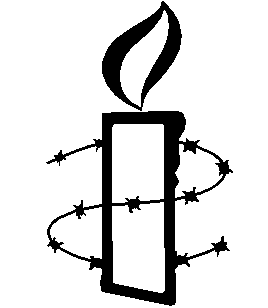

For members of Amnesty International only.
|  |
Memoir of a Former AIUSA MemberSamson Tu |
Content
More important memos that explain why I left AIUSA
Memo that explains why I remain a non-AIUSA Amnesty volunteer 1. IntroductionFrom time to time, friends and colleagues have asked me why I changed from a whole-hearted supporter of AIUSA to one who, although still volunteering for Amnesty, refuse to be, or be seen as, a member of AIUSA. This document is a somewhat haphazard attempt to answer that question. It is not my intention to harm Amnesty's reputation or credibility in the eyes of the public. Nor do I wish to make accusations against individuals. I believe that my experiences reflect deeper issues within AIUSA regarding staff-volunteer relationships, the relationship between the Board and volunteers, and conflict resolution procedures within the organization. Except for one memo that recounts the story of a very positive international collaboration, I have taken out all personal names in this set of documents. Furthermore, I do not wish people to form prejudice against individuals still in the organization. For example, I had problems with three successive staff members who worked on AIUSA website, but the current AIUSA web team is made up of entirely different individuals and my past experiences should not reflect on them. I am no longer a member of AIUSA and there is no chance that I'll return to it. Even though I still care about many individuals in AIUSA and I still share the goals and dreams of the Amnesty movement, I am quite indifferent to AIUSA as an organization. In no way is this document an attempt to influence issues within AIUSA in one way or another. I wish that my experiences were isolated. However, I see around me numerous volunteer leaders leaving AIUSA for one reason or another. I understand that in an organization, there is a natural cycle of turnover and renewal. Nevertheless, an organization cannot grow and make use of its accumulated expertise if numerous activists leave in disillusionment. Some companies ask their departing employees to have "exit interviews." This document can serve a similar role. It is also an opportunity for me to record some reflections on my experiences of the last 10 years. I try to be as fair as possible to everyone involved. However, I won't pretend that this document captures all aspects of the incidents described here. As a memoir, it is necessarily one-sided. Readers should keep in mind that there are other sides that are not represented here. 2. Becoming an Amnesty VolunteerI first heard about Amnesty International while I was a college student in the 1970s. I received the Match Box, one of the early newsletters published by Amnesty International. At the time, I was an overseas supporter of Taiwan's opposition movement that sought to establish a more democratic society in Taiwan. After 1980, when Amnesty International adopted a number of Taiwan's opposition leaders as prisoners of conscience and sent observers to their trials, I joined as a national member. With Taiwan's democratization in the late 1980s, I felt the need to be rooted in the United States while still remaining concerned about world affairs. I first attended a local AI group in San Jose in 1991. In 1992, I started to attend meetings of the Pal Alto group (Group 19) because of its proximity to Stanford and because it was a large and active group. I was deeply impressed by the enthusiasm, professionalism, and dedication of Group 19 members. I first gained experience through tabling with the group, then I coordinated action files, and started to apply my computer and internet skills to AI's work. In 1993 I created the group's electronic mailing list on a Stanford computer to distribute its newsletters. I posted announcements of Group 19 meetings in Bay Area newsgroups. In 1994 I served as coordinator of the group, and became involved in the regional and national organization for the first time. 3. Innocent DaysThe Internet provided new opportunities for volunteers to be involved in Amnesty activities at all levels of the organization. My involvement with AIUSA at the national level started in 1994 when I started to make comments on Amnesty mailing lists and newsgroups (called conferences while AIUSA's electronic communication was hosted on Peacenet). See, for examples, Comments on multiculturalism, more comments on multiculturalism, and thoughts on computer communication. It was an exciting time for volunteers interested in exploring the use of computer communication in Amnesty's work. The IS website was launched in 1994 at the time of the Indonesian Campaign. At about the same time I started Group 19's website. At the 1994 AGM in Chicago I talked to some Bay area volunteers interested making use of new technology in AI's work.. Upon returning to the Bay area, I starting the aiusa-ncal electronic mailing list for Bay area AI activists. It was one of the first, if not the first, local-area AIUSA member mailing lists. (See the announcement of aiusa-ncal that we published in the AIUSA Monthly Mailing, and an evaluation of aiusa-ncal after it has been in use for more than a year.) In 1994-95, AIUSA was trying to stem the decline of activism by going back to its "field-organizing" tradition. The Membership Action Team (MAT) circulated plan to improve the support and development of AIUSA's volunteer membership. I contributed some comments on MAT report arguing that it must integrate computer communication into its vision of how to promote volunteer activism. I am still trying to realize one of the goals enumerated in my comments: "Imagine that AIUSA has a well-organized and password-protected ftp/gopher/WWW archive of internal training materials, campaign materials, publication materials that volunteers from all over the country (or around the world) can contribute to and download from." Sadly I am pursuing that goal out side AIUSA now (through the amnesty-volunteer.org project). 4. First Battles: Computer Communication Working GroupIn 1995, the Board adopted a resolution that "Forward oversight responsibility for this issue [of developing Amnesty International's use of Information Technology] to the Computer Communications Working Group (CCWG) in collaboration with the appropriate deputy executive directors." I was appointed as the Western Region representative of the CCWG. My tenure on that committee was brief. I resigned in 1996, although I continued to play a role in its work until 1997. In March of 1996, the chair of the Western Region's Regional Planning Group asked me for inputs on the region's goals and priorities from the point of view of computer communication. memo on organizing the Western Region's electronic mailing lists and other networks. I was happy that I was able to work with Western Region staff to set up Amnesty mailing lists for each state in the Western Region. In 1995 and 1996 members of CCWG, together with other volunteers, engaged in intense discussion on how to start AIUSA's web presence. In early 1996, I summarized the discussion in a white paper, and, in addition, circulated a plan of action among those in AIUSA interested in the development of a web site. However, before the 1996 AGM, the senior management presented to Board a plan for creating AIUSA's website that completely ignored the volunteers' input and that was contrary to our recommendations. That happened despite the fact that the staff was informed of our discussion and that their input was repeatedly and vainly solicited. The staff recommendation had the gall of calling for the formation of a new staff/volunteer committee to study the website issue. I was furious, and wrote a memo expressing my outrage and demanding changes in the way staff and volunteers work together.. Volunteers working with CCWG started to develop a prototype AIUSA website on Peacenet (see first pages designed mostly by Georgia Tech volunteers). At the same time a staff member had started an AIUSA publication website, but he refused to talk to CCWG members directly. Instead, he demanded that he communicate with us through an intermediary. I was appalled by this state of affair and tried to convince him that, even though he might have problems with individual members of CCWG, people working on AIUSA websites should still talk to each other. This reconciliation attempt. got nowhere. At the 1996 AGM, we discussed the issue with the senior management, who, instead of trying to understand the root of the problem and work a creative solution, told us to maintain the status quo. I became convinced that, with the kind of leadership provided by senior management, AIUSA CCWG will not be effective in carrying out its mandate. Rather than continue to hold a position of responsibility that required me to work with a management in which I've lost confidence, I resigned from CCWG. Instead, I considered myself a freelance volunteer who could still contribute to discussions about AI's use computer communication and take up projects for AI. In particular, I started to work for IS on website and email lists issues (see next section). At the Board meet in San Francisco in September of 1996, I attended the a meeting where web issues were discussed. I was so upset with what went on that I walked out. The Board liasion to CCWG asked about that and I wrote.a memo that summarized my frustrations with AIUSA at that time.. 5. Partnerships Around the WorldThe Internet opened up the possibility for individual Amnesty members around the world to meet online and to work together. My international collaborations gave me the most cherished memories of my Amnesty work. In 1995, I was thrilled to learn that a dear friend from my college days became the Executive Director of AI Taiwan. Through him, I came to understand how a small Amnesty sections in a developing countries was struggling with fund-raising, language problems, recruitment and training of members, and outreach to a public that saw AI primarily as a Western institution. I visited the AI Taiwan office several times, attended some local group meetings, and gave a talk (in Taiwanese!) about doing casework at a group meeting in Kaoshiung (the city where I spent my childhood). 1995-96 was a time when Amnesty websites were springing up everywhere. There was a clamoring for making public AI documents available on the web. In 1996 I started to work with Amnesty volunteers from the Italian section to develop a system to translate the Weekly Mailing documents that IS send out every week into html and organize them on the IS website www.amnesty.org (hosted in Canada on donated Internet access). The Italians would mirror the document library on their own website. At the same time, I took over the management of the IS press release e-mailing list amnesty-L, which led to a collaboration with the Swedish section staff. Thus, I started a wonderful collaborations with staff and volunteers from the IS, Italian, Swedish, UK, and Canadian sections. (If you go to the "About AI" page on the IS website http://www.web.amnesty.org/web/aboutai.nsf and click on the "Amnesty International on-line supporters" link (local copy), you'll see a very nice acknowledgement of my work with the IS). I was fortunate that my work took me to Italy, Sweden, and England several times during those years.. Thus I had the opportunities to meet my IS, Italian, and Swedish collaborators in person. I shall always remember the dinner and laughter I shared with AI Italy Board members in Bologna, the wonderful dinners my Italian collaborator cooked, and the meeting with members of AI Italy CCWG in Florence. The story of that collaboration is recounted in a memo that I wrote in 2000. 6. Working with AIUSA Information Technology Staff and Developing AIUSA's WebsiteDespite a rocky beginning, I developed excellent working relationship with middle managers in AIUSA responsible for information technology. During 1996 - 1998 (until both of them left AIUSA), I in effect played the role of an unpaid consultant to them, helping them to write planning documents that were presented to the Board. Thus, paradoxically, even though I resigned from AIUSA CCWG, I had in effect more voice in the section's IT planning. As described in Section 4, in 1996, a few volunteers working with the AIUSA CCWG started the www.amnesty-usa.org website, one of the precursors of the current AIUSA website. The CCWG recommended that a staff web coordinated be hired who can work with volunteers to enhance the site. The web coordinated that was hired had good design skills, but had weak technical background. I myself and one other volunteers stayed to help developing the site. I naively thought that, in AIUSA, staff and volunteers who have complementary skills could work as equal partners on a project such as this. After almost two years of utterly frustrating effort, I gave up. Basically the staff person thought that volunteers' contributions and opinions dispensable and that he could override our objections, change what we previously had agreed to, and manage the site without informing us of his plans. At one time he changed the ISP that provided DNS service for www.amnesty-usa.org without informing anyone. We started to receive reports of broken links and bouncing email messages. Until he admitted that he had changed the site's registration, we thought the AIUSA site had been hacked. At the 1997 AGM, we got him to agree that, before he makes any technical changes to the AIUSA website, he'd consult either me or AIUSA's IT technical manager. Of course that was another broken agreement. In October of 1997 I stopped my involvement in AIUSA's web effort, and together with a few friends, started the amnesty-volunteer.org project. 7. The Amnesty-Volunteer.Org ProjectIn 1997, seeing that my relationship with the AIUSA web coordinator deteriorating, and the vision of an on-line archive of Amnesty resources accessible to volunteers nowhere near been realized, I got together with a few friends to start a volunteer-run project to create such an archive. I saw the amnesty-volunteer area as a the "internal" counterpart to the library of external documents that I was helping to build at the IS website. One target the public while the other serves volunteers. We envision creating an archive of guidelines, training materials, clip arts, examples, and other resources that volunteers can use. No AI site provides this kind of materials at that time. In addition, we put up documents that are relevant to topics of consultation within the Amnesty movement (e.g. documents related to the Mandate Review and Campaign Review prior to the 2001 ICM) and host pages for Amnesty groups or structures that need web space. The document "about the amnesty-volunteer.org project" gives an overview of the project:. The resources are for all of Amnesty's international volunteers who belongs to sections that can validate their Amnesty membership. The resources include a library of internal AI documents that have been distributed through Weekly Mailing from 1996 to the present. There are a number of training modules, an electronic version of the Casework Manual (a compendium of Amnesty techniques and experiences on doing case work). In additional, there are a lot of AI policy documents. In spring of 2002, the internal area of the site has about 160 megabytes of content. To make possible the sharing of these internal documents among Amnesty members from around the world, we developed a de-centralized and distributed user and password management system that we call the "gatekeeper" system. Each section that participate in www.amnesty-volunteer.org needs to have a 'gatekeeper' whose responsibility is to validate username/password application from a member of that section. I describe the idea to the 1998 international CCWG meeting and wrote a gatekeeping mechanisms memo for the 1999 international CCWG held in Amsterdam. I am glad that the IS is planning to implement a similar system for managing access to internal documents in its databases. 8. An Excommunication in AIUSAThe real reason that I gave up on AIUSA was my disappointments with the Board. In 1998, the first AIUSA web coordinator resigned. In his resignation letter, he complained about another volunteer who worked with us on the website. The Executive Director unilaterally ordered that, in the future, that volunteer could only communicate with staff through designated intermediaries. With no due process or investigation of the facts, the majority of the Board assented to the ED. I was extremely disturbed that the majority of the Board of Directors should so quickly assent to the excommunication of a volunteer without any attempt to determine the facts of the case and to give volunteers a chance to present their side of the story. (One Board member even wrote that the web coordinator were scrutinized and criticized by volunteers because volunteers working on the site were "salivating" after the position. It was a revelation to me that a Board Director of AIUSA, himself a volunteer, could say something like that about volunteers. To this day I feel deeply insulted by that accusation. It is one more experience that diminished my respect for the organization.) Furthermore, the Board passed a decision giving the web coordinator complete authority over the AIUSA website. The minutes stated that "Several express the view that web resource persons are like consultants or other volunteers with discrete tasks (like assisting in a general mailing)." This decision overturned the previous basis for volunteer participation in AIUSA's web development. I wrote to the Board saying that "Some people consider RQ's resignation tragic, I think the real tragedy happened when we gave up the hope that we could make a team where staff and volunteers work collaboratively as equal partners on a common project." For me, my loyalty to AIUSA ended when I concluded that, within AIUSA, I should not expect volunteers to play substantive roles in decision making on projects where staff and volunteers work together. When a conflict arises, irrespective of the actual facts around the conflict, the staff will always have the final say. The Board decision institutionalized a subordinate role for volunteers. This decision is in direct contradiction to the staff/membership relation task force recommendations that staff and members ought to be working in a co-equal, collaborative relationship. Furthermore, the decision gave the web coordinator the power to terminate volunteer involvement at will, "subject to normal processes of appeal." Unfortunately, in this case where a volunteer was ordered to communicate with staff only through intermediaries, the ombudsman who should mediate is a member of the Board that assented to the ED's action with no thought of hearing the volunteer's side of the dispute. While Amnesty constantly calls for thorough investigation of human right violations, such investigation apparently was not necessary when it comes to internal dispute within AIUSA. I wrote a memo to the Board of Director detailing my understanding of the dispute. I didn't even get the courtesy of a response. By this time I had decided to quit as a member of AIUSA With the Board deciding against volunteers, we could only turn to AIUSA membership for support. As I said, at the time, the ombudsman to whom a volunteer can make an appeal in disputes with staff is a Board member who had participated in decisions regarding this dispute between staff and volunteers. To make independent mediation possible, that year we were able to pass through regional conferences a resolution to create a mediation board. That resolution was defeated at the 1999 AGM. We then submitted a resolution making ombudsman a neutral party appointed from outside AIUSA. That resolution passed at the 2000 AGM.. To me that is a vote of no-confidence in the ability of the majority of Board members to represent interests of volunteers. That outside mediator proved to be useful later when a staff member made further accusation against us. . 9. More Troubles with AIUSAFrom the start, the amnesty-volunteer.org project was an international collaboration. We were assisted by the IS and by volunteers and staff from a number of section. Most AIUSA staff, however, rebuffed our repeated requests for collaboration. The 1998-2000 AIUSA web coordinator (not the same as the first one) was quite hostile. For some reason, he considered us to be a competitor. In 1999, after having a face-to-face meeting, I gave up on having collaboration with him. However, I hadn't given up the hope of obtaining good AIUSA resources for the amnesty-volunteer.org site. In 1999 a friendly staff member became the acting head of the National Field Program. I asked him for permission to put the NFP's Activist Toolkit on our site. He was quite willing, but the materials were not ready in August. In the autumn and winter of that year, after the acting head had left, I engaged in repeated and futile email exchanges with staff member who were dragging their feet in sending me the materials. Twice they said I should just link to these materials on the member-only area of the AIUSA website. Twice I explained that amnesty-volunteer.org is designed for *international* audience, not all of whom have access to AIUSA's internal website, and that I was willing to take out all AIUSA-specific information in what we put up on amnesty-volunteer.org. I even offered to go to the Washington office in person to copy the materials if sending them was too much trouble. The offer was refused. (In the end, after the friendly staff member returned to the Washington office, they finally sent the Activist Toolkit to me. Unfortunately, the electronic version used PageMaker fonts that I did not have, and I couldn't create presentable pages for the amnesty-volunteer.org site.) The second AIUSA web coordinator left in 2000. In his resignation letter, he made accusations against me and another volunteer, even though he had minimal contacts with me and didn't understand what the amnesty-volunteer site was about. I wrote two memos to the Board and the ED clarifying the situation and defending myself. The first memo responded to the the charges that I was an AIUSA member who hid behind www.amnesty-volunteer.org to avoid being accountable to AIUSA. The second memo responded to the charge of harassment that I completely missed the first time around because the charge was so preposterous. My memos were greeted with complete silence. Maybe that's because I told them that I had quit AIUSA and they didn't feel that they need to respond to me. The other volunteer had to go through a mediation process to maintain her status in AIUSA. At that time, the international movement was studying issues of organization and accountability. I wrote a memo discussing issues of accountability for people working on transnational projects such as www.amnesty-volunteer.org. 10. NOT a Member of AIUSA: Back to Local GroupBy 2000, my feeling toward AIUSA alternated between anger, bitterness, and numbness. A Chinese proverb says that "there is no greater sorrow than a deadened heart." That's the stage I'd reached with respect to AIUSA. Basically I came to believe that, at the section level, (1) despite the rhetoric "culture of respect," AIUSA is not an organization that value staff and volunteers as equal partners in Amnesty's work, that (2) the majority of the Board is not effective (or maybe even interested) in advocating activists' rights and concerns, or that (3) a number of section staff treat certain volunteers with prejudice. The former web coordinator accused me of unaccountability to AIUSA even after I had left AIUSA. Acting on my promise to the the AIUSA Executive Director that "I will make an effort to let AIUSA staff and members know that I am no longer an AIUSA member, and, although I still perform some group-related tasks for AIUSA Group 19, I am not doing any work for AIUSA and do not want to be seen as a member of AIUSA," I started to sign my emails on Amnesty topics with the signature "NOT a member of AIUSA." What Went Wrong?Part of my disappointments, I believe, resulted from divergent views about the role of volunteers in AIUSA. AIUSA started out as a mostly volunteer-driven organization. Legends had it that early AIUSA organizers, such as Ginetta Sagan, the founder of my home group Group 19, had traveled up and down Western United States to organize local Amnesty groups. By the mid-1990s, AIUSA had become a large organization with more than a hundred salaried staff members. Many aspects of the organization were led by professional staff who had authority over their respective programs. In the mid-1990s, internet-based activism was a nascent activity. Volunteers spearheaded on-line organizing activities. We recognized quite clearly that we needed a professional staff to maintain the AIUSA website on a day-in and day-out basis. However, a few volunteers and I thought that it would be possible to maintain volunteer involvement in a team-work partnership where staff and volunteers have joint decision-making and work responsibilities. In the country coordinator program, where volunteers become experts in human-rights work on specific countries and regions, staff members are supposed to defer to (at least consider seriously) the judgment of these country experts. AIUSA's national organization clearly does not embrace this model of work for programs outside the country coordinator program. Thus, at national level, volunteers cannot work with staff members as equal partners. Volunteers can give advice, but staff always have authority, even when they do not have the expertise. This reliance on staff, I believe, was confirmed by the reception of my report on the 1998 international CCWG meeting. In 1998, I was on leave from Stanford University and working in England. The chair of AIUSA CCWG asked me to attend the international CCWG meeting held in London, UK. After the meeting, I filed a detailed report to the Board and the Execute Director. I didn't get any response on the report. Later, through third party, I learned that, at a Board meeting, the AIUSA IT manager assured the Board that they had taken care of everything I mentioned in my report. My previous involvement in AIUSA's planning for computer communication indicated otherwise, but I wasn't at the meeting where my report was discussed. That the the majority of the Board should take the words of the staff as final, and didn't even notify me of their disposition of my report speaks volumes about AIUSA. Needless to say, I felt that my effort was wasted. (For the same meeting, AI Italy also asked me to speak on issues that they were concerned about. I filed a separate report to them. In contrast to the Board of AIUSA, the Italians fully discussed my report and gave me a detailed response.) Thus, my impression is that, in AIUSA, when volunteers and staff work together, staff have operational authority on projects. Volunteers either give advice or they work under staff's direction. Volunteers can certain participate in planning and can write reports for the organization. However, except for the Board, which oversees the staff through the Executive Director, have little say in those parts that are to be implemented by the staff.. Even within this model, had staff being less controlling, we could have worked out areas and issues where volunteers could be given room for initiative and responsibility. My collaboration with IS staff is one such example. Instead, those of us working on the AIUSA website found that we were not consulted, our suggestions were ignored, promises were broken, and things were done over our strenuous objections. Moreover, we were resented; RXQ couldn't resist a parting shot when he left AIUSA. The majority view of Board on how work is done in AIUSA, unfortunately, led to its unquestioning acceptance of the Executive Director's actions. I was not surprised that the ED, as head of the AIUSA staff, acted the way he did. What really surprised me, and demoralized me, was the Board, as representatives of AIUSA members, gave in to the ED's action without requiring a process of fact finding and mediation. The way the majority of the Board kowtow to the ED on this matter made a mockery of the fact that members were supposed to seek the Board ombudsman to adjudicate disputes with staff. I found it astonishing that a human rights organization like AIUSA should follow no due process when it comes to resolving staff-volunteer dispute. My experiences led to my loss of confidence in AIUSA Board of Directors' ability to represent interests of volunteers. That's when I really gave up on AIUSA. Despite the rhetoric of staff-volunteer cooperation, there are factionalism in AIUSA. Some staff view certain volunteers with prejudice. As early as 1995, when I was just starting to become involved in AIUSA at the section level, a former staff member warned that I shouldn't be too close to a certain volunteer, lest I be seen as "XXX's toady." I was very puzzled and surprised that anybody should say this within a human rights organization. However, later I learned that one can pay a cost for associating with "wrong people." I am convinced that part of the reason I had such a hard time in AIUSA was because of this guilt by association. Other volunteers told me that there was a division in AIUSA between those who were "insiders" and those who were "outsiders." The opinion of insiders were respected and taken into consideration, and the people with whom I was associated were outsiders (pain in the neck, in fact!). To me, my associates were some of the most effective and dedicated volunteers who worried about the state of the section. For better or worse, many of them, like me, have left AIUSA. Perhaps it is understandable that a growing organization like AIUSA should professionalize its work force and create controls and rules to governing its work. However, at the same time it claims to be a grassroot-based movement with internal democracy. These two models--rational bureaucratic organization and charismatic volunteer-led movement--are fundamentally at odds with each other. AIUSA has institutionalized ways of volunteer involvements through coordination groups and various committees. I think a volunteer in AIUSA can still work effectively as long as he/she follow these established channels, and doesn't hold the illusion, as I did, that staff and volunteers can be equal partners in making decisions while working on innovative shared projects. If you want to do something unconventional, check whose toes you may be stepping on. Cherish those staff with whom you can develop good working relationships. Many staff members did treat me as colleagues in human rights work. However, if you hit against resistance, consider taking another line of work. You certainly can't expect as a matter of course that the majority of Board members will look at issues from a volunteer's point of view. (It helps to have friends on the Board. For example, it was a friendly Board member who, in 1996, alerted me to the fact that the CCWG was being bypassed in staff's recommendations regarding the AIUSA website.) In my experiences with the AIUSA Board, it was very much limited by the inputs it receives. I saw a few instances where Board members proactively sought out individuals who could provide first-hand information. (As an overworked professional, I can certainly understand that Board members are too busy.) Still, the garbage-in-garbage-out rule holds. Making PeaceYet I cannot walk away from Amnesty International. Even though I am skeptical about AIUSA's national organization, I regard many AI staff and volunteers around the world with deep respect and affection. I still think Amnesty International is doing very necessary work, and that I am proud to be part of the movement as a volunteer. Fortunately, I can still putter around with Group 19, a local group whose many members I've worked with over the years and whom I respect and like. I won't take up positions of responsibility that require me to deal with the national organization, but I am happy to participate in the community of Amnesty volunteers through this band of dedicated volunteers and through international avenues that are still open to me. Most of my energies are devoted elsewhere now. This document sums up my involvement with AIUSA. If AIUSA is like the Catholic Church, I am a non-church-going believer, which is fine with me. p.s. I ended my involvement with the local group Group 19 in October 2014, when its membership and activism declined so much that I no longer thought it was effective. (Since then, there have been efforts to revive the group.) |
Last updated: 2002-06-19
Samson Tu